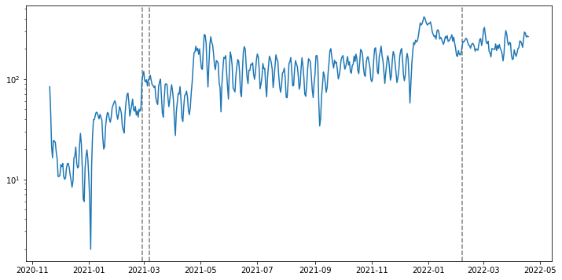
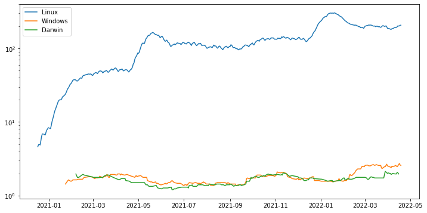
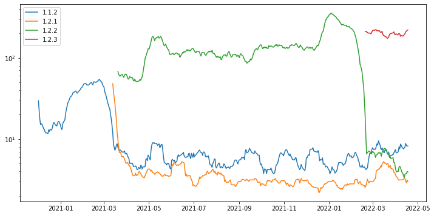
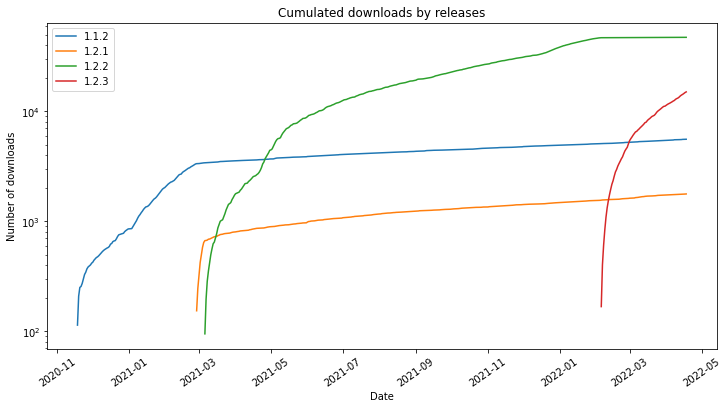

Usage Analysis
Usage Analysis#
from matplotlib import pyplot as plt
import pandas as pd
Setting matplotlib parameters
plt.rcParams["figure.figsize"] = [12, 6]
Read the data and transform the timestamp variable
df = pd.read_csv("package_download.csv", parse_dates=["timestamp"])
Aggregating number of daily downloads with moving average (3 days)
source = (
df.assign(num=1)
.groupby(pd.Grouper(key="timestamp", freq="1D"))["num"]
.count()
.rolling(window=3)
.mean()
.dropna()
)
Creating a list from the release dates
release_dates = df.groupby("package_version")["timestamp"].min()
As we can see there is only a slight increase in downloads after the releases
fig, axes = plt.subplots()
df.groupby("package_version")["timestamp"].min().iloc[1:].apply(
lambda x: axes.axvline(x, linestyle="--", color="gray")
)
axes.plot(source.index, source)
axes.set_yscale("log")
plt.title("Time series of package downloads and new releases")
plt.xlabel("Date")
plt.xticks(rotation = 35)
plt.ylabel("Number of downloads")
plt.show()

Aggregating number of daily downloads by system names with moving average (30 days)
source = (
df.assign(num=1)
.groupby(
[
pd.Grouper(key = 'timestamp', freq='1D'),
"sys_name",
]
)["num"]
.count()
.groupby(level=1)
.apply(lambda gs: gs.rolling(window=30).mean())
.dropna()
)
fig, axes = plt.subplots()
for cat in source.index.get_level_values(1).unique():
axes.plot(source[:, cat].index, source[:, cat], label=cat)
axes.legend()
axes.set_yscale('log')
plt.title("Number of daily downloads by system names")
plt.xlabel("Date")
plt.xticks(rotation = 35)
plt.ylabel("Number of downloads")
plt.show()

Creating a pivot table of the co-occurrences of operating systems and cpu types
(
df[["cpu", "sys_name"]]
.assign(num=1)
.groupby(["cpu", "sys_name"], as_index=False)
.count()
.assign(num = lambda _df: _df['num'] / _df['num'].sum())
.pivot("sys_name", "cpu", "num")
.fillna(0)
.style.format("{:.2%}")
.background_gradient(cmap='viridis')
.set_caption("Co-occurrences of operating systems and cpu types")
)
| cpu | AMD64 | aarch64 | arm64 | armv7l | x86_64 |
|---|---|---|---|---|---|
| sys_name | |||||
| Darwin | 0.00% | 0.00% | 0.07% | 0.00% | 0.52% |
| Linux | 0.00% | 0.02% | 0.00% | 0.01% | 98.56% |
| Windows | 0.82% | 0.00% | 0.00% | 0.00% | 0.00% |
Aggregating number of daily downloads by releases with moving average (15 days)
source = (
df.assign(num=1)
.groupby(
[
pd.Grouper(key="timestamp", freq="1D"),
"package_version",
]
)["num"]
.count()
.groupby(level=1)
.apply(lambda gs: gs.rolling(window=15).mean())
.dropna()
)
fig, axes = plt.subplots()
for cat in source.index.get_level_values(1).unique():
axes.plot(source[:, cat].index, source[:, cat], label=cat)
axes.legend()
axes.set_yscale('log')
plt.title("Number of daily downloads by releases")
plt.xlabel("Date")
plt.xticks(rotation = 35)
plt.ylabel("Number of downloads")
plt.show()

Cumulating number of daily downloads by system names with moving average (30 days)
source = (
df.assign(num=1)
.groupby(
[
pd.Grouper(key = 'timestamp', freq='1D'),
"package_version",
]
)["num"]
.count()
.groupby(level=1)
.apply(lambda gs: gs.cumsum())
)
fig, axes = plt.subplots()
for cat in source.index.get_level_values(1).unique():
axes.plot(source[:, cat].index, source[:, cat], label=cat)
axes.legend()
axes.set_yscale('log')
plt.title("Cumulated downloads by releases")
plt.xlabel("Date")
plt.xticks(rotation = 35)
plt.ylabel("Number of downloads")
plt.show()
